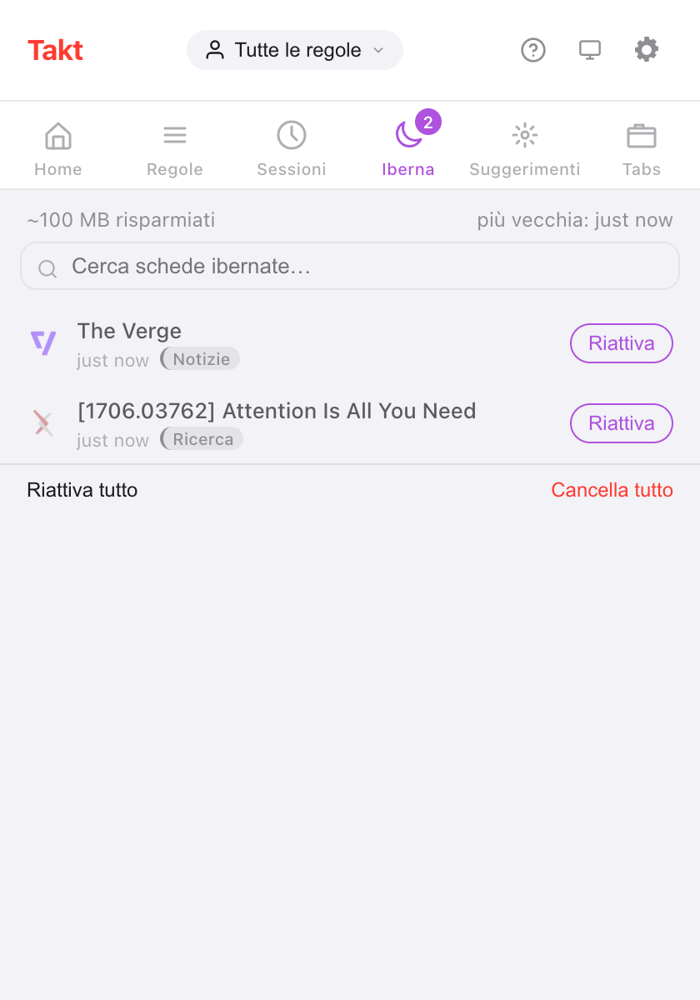
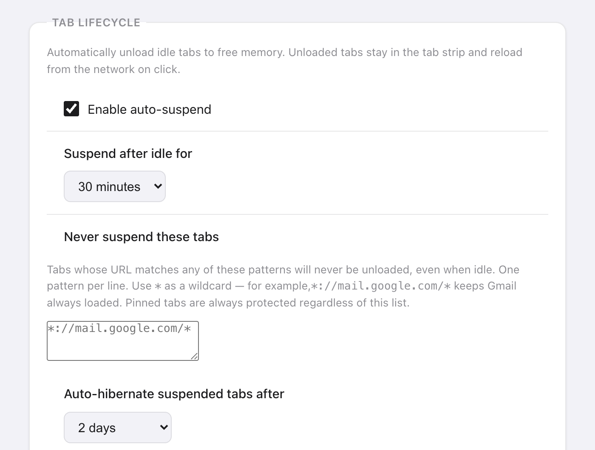

In breve: Takt gestisce le schede inattive in due fasi. Sospendere scarica una scheda ma la lascia nella barra delle schede. Ibernare la chiude e ne salva lo stato, così un clic la riporta indietro.
- Free: sospensione automatica dopo un'inattività da 15 minuti a 4 ore, un elenco di schede da non sospendere mai e ibernazione manuale fino a 5 schede.
- Premium: ibernazione automatica per tempo di inattività, per numero di schede per finestra o alla fine di una programmazione, e fino a 200 schede ibernate.
- Tutto resta sul tuo dispositivo. Nessun account, nessuna analisi dei dati d'uso.
Che differenza c'è tra sospendere e ibernare una scheda?
Entrambe liberano memoria. Cambia dove finisce la scheda.
| Sospesa | Ibernata | |
|---|---|---|
| Barra delle schede | Resta, in grigio | Sparisce, elencata nel riquadro Iberna di Takt |
| Come | Lo scaricamento delle schede integrato in Chrome | Scheda chiusa, stato salvato da Takt |
| Per riaverla | Fai clic sulla scheda; la pagina si ricarica | Fai clic su Riattiva; la scheda si riapre dov'era |
| Manuale | Consigli di sospensione (dashboard Premium) | Gratuita, fino a 5 schede |
| Automatica | Gratuita | Premium |
Come ibernare una scheda a mano?
- Installa Takt dal Chrome Web Store.
- Sulla scheda che vuoi mettere da parte, apri il popup di Takt e fai clic su Iberna scheda. Oppure fai clic destro sulla pagina e scegli Sospendi questa scheda.
- La scheda si chiude e Chrome mostra una breve notifica "Scheda sospesa".
- Per riaprirla, apri il riquadro Iberna del popup e fai clic su Riattiva.
Takt salva URL, titolo, favicon, nome e colore del gruppo, finestra, posizione nella finestra, stato di scheda fissata, punto di scorrimento e il momento in cui l'hai ibernata. Riattiva riapre la scheda nella sua finestra, nella posizione di prima, di nuovo nel suo gruppo, scorsa fino a dove eri arrivato.
Se lo stesso URL è già aperto, Takt chiede conferma prima di riattivarla, così non ti ritrovi con un duplicato.

Il dato "~100 MB risparmiati" è una stima fissa: Takt conta 50 MB per ogni scheda ibernata. Non misura le schede che chiude.
Come scaricare automaticamente le schede inattive?
La sospensione automatica è gratuita e attiva per impostazione predefinita. Ogni 5 minuti, Takt scarica le schede inattive da più tempo della soglia scelta: 15 minuti, 30 minuti (predefinita), 1, 2 o 4 ore. La imposti in Opzioni → Settings → Tab Lifecycle.
Inattiva significa il tempo trascorso da quando la scheda è stata attiva l'ultima volta o ha finito di caricarsi. Takt non sospende mai:
- la scheda attiva, o una scheda che si sta ancora caricando;
- le schede che riproducono audio;
- le schede fissate;
- le schede che corrispondono al tuo elenco Never suspend these tabs.
L'elenco accetta un pattern per riga, con * come carattere jolly. *://mail.google.com/* tiene Gmail caricato. L'elenco protegge le schede anche da tutti i meccanismi di ibernazione automatica descritti qui sotto.

Chrome può ibernare le schede automaticamente? Premium
Con Premium, Takt ha tre meccanismi:
- Tempo di inattività. Una scheda già sospesa e inattiva oltre il ritardo scelto viene ibernata. Puoi scegliere da 5 minuti a 7 giorni; il valore predefinito è 2 giorni.
- Limite di schede. Quando una finestra supera il tuo limite (da 15 a 100 schede, predefinito 30), Takt iberna le schede usate meno di recente finché non torna al limite. Chiudi una scheda e quella ibernata più di recente torna in quella finestra. Ogni finestra viene contata separatamente.
- Fine della programmazione. Una programmazione di profilo può ibernare tutte le schede idonee quando finisce il suo orario. Attiva Hibernate tabs when schedule ends in Profiles.
Per i meccanismi di inattività e limite di schede, Chrome mostra una notifica con un pulsante Undo per 10 secondi. Dopo, la scheda aspetta comunque nel riquadro Iberna.
È un altro Great Suspender?
Domanda legittima. Nel 2021 Google ha rimosso The Great Suspender dopo che era stato trovato codice malevolo in una versione pubblicata dopo la sua vendita. Da allora molti non si fidano più delle estensioni che sospendono le schede.
Ecco cosa fa diversamente Takt, e cosa puoi verificare:
- Le schede sospese mantengono il loro vero URL. Takt usa la funzione di scaricamento integrata in Chrome. Non sostituisce la tua pagina con una pagina dell'estensione, quindi disinstallare Takt lascia le schede come sono.
- Le schede ibernate restano sul tuo dispositivo. I record vivono nello spazio di archiviazione locale di Chrome. Lasciano il computer solo se configuri tu stesso la sincronizzazione con Drive o su cartella.
- Nessun account, nessuna analisi dei dati d'uso, nessuna telemetria. Le autorizzazioni aggiuntive sono facoltative e richieste solo quando una funzione ne ha bisogno. Vedi come Takt tiene i dati in locale.
Resta il fatto che devi fidarti di chi pubblica gli aggiornamenti di qualsiasi estensione installi. Leggi le autorizzazioni che chiede.
Basta Risparmio memoria di Chrome?
Spesso sì. Se vuoi solo che le schede in background smettano di usare memoria, la funzione integrata Risparmio memoria di Chrome non costa niente e non richiede estensioni.
Due lamentele tornano di continuo: le schede si ricaricano quando ci torni, e alcune schede inattive non vanno mai in sospensione. Anche la sospensione di Takt ha il primo compromesso. Una scheda sospesa si ricarica quando ci fai clic, perché è lo stesso tipo di scaricamento.
Takt aggiunge il controllo. Scegli tu la soglia di inattività, elenchi i siti che non deve mai toccare, e l'ibernazione toglie del tutto le schede dalla barra lasciandoti un modo per riaverle.
Quali sono i limiti?
| Free | Premium | |
|---|---|---|
| Sospensione automatica ed elenco di esclusione | Sì | Sì |
| Ibernazione manuale | Sì | Sì |
| Schede ibernate alla volta | 5 | 200 |
| Ibernazione automatica per inattività, limite di schede o programmazione | No | Sì |
Le schede fissate e quelle che riproducono audio non possono essere ibernate. Quando raggiungi il limite, Takt rifiuta di ibernarne altre finché non ne riattivi o cancelli qualcuna.
Metti una scheda a dormire. Riattivala esattamente dove l'avevi lasciata.
Aggiungi Takt a Chrome, è gratisDomande frequenti
Che differenza c'è tra sospendere e ibernare una scheda?
Una scheda sospesa viene scaricata ma resta nella barra delle schede e si ricarica al clic. Una scheda ibernata viene chiusa; Takt ne salva lo stato e la riapre quando fai clic su Riattiva.
Quante schede posso ibernare gratis?
5 alla volta con il piano gratuito, 200 con Premium ($3/mese o $30/anno). La sospensione automatica non ha limiti ed è gratuita.
Takt è un altro Great Suspender?
Takt sospende con lo scaricamento integrato in Chrome, quindi le schede mantengono il loro vero URL. Le schede ibernate restano nello spazio di archiviazione locale sul tuo dispositivo. Nessun account, nessuna analisi dei dati d'uso, nessuna telemetria.
Le schede ibernate sopravvivono al riavvio del browser?
Sì. Sono salvate su disco, non in memoria. All'avvio Takt elimina ogni record il cui URL è già di nuovo aperto.